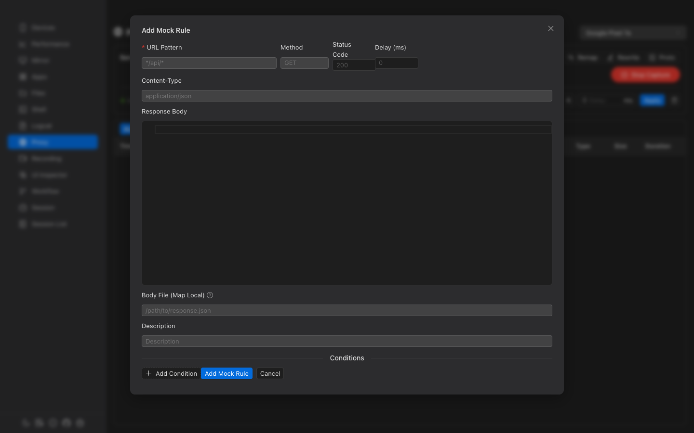
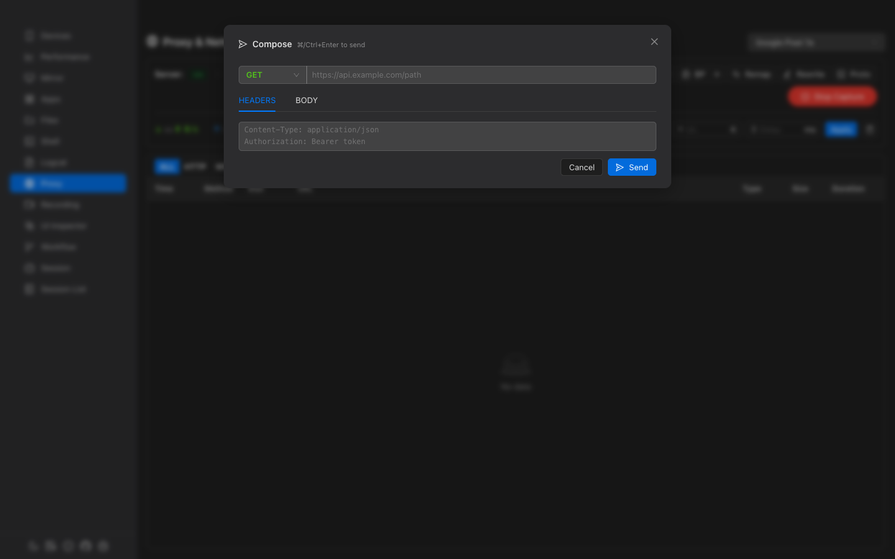

Network Proxy
Full-featured HTTP/HTTPS proxy with MITM decryption, mock responses, breakpoints, URL remapping, auto-rewrite rules, protobuf decoding, bandwidth throttling, and HAR export.
Overview
MITM Decryption
Decrypt HTTPS traffic with automatic CA certificate management.
Mock Rules
Return fake responses without hitting the real server. Supports conditions and delays.
Breakpoints
Pause requests or responses mid-flight to inspect and modify them.
Map Remote
Redirect URLs to different servers (e.g., production to staging).
Auto-Rewrite
Regex find-and-replace on headers or body content automatically.
Protobuf Support
Load .proto schemas and decode protobuf payloads with named fields.
Proxy Toolbar

Server Controls
| Control | Description |
|---|---|
| Server Status | Shows ON or OFF |
| IP Address | Auto-detected local IP (copyable) |
| Port | Proxy port (default: 8080). Editable when stopped. |
| WebSocket | Toggle WebSocket interception |
| MITM | Toggle HTTPS man-in-the-middle decryption |
Certificate Controls (when MITM is on)
- Cert — Push the CA certificate to the device with installation instructions
- Trust status — Shows trusted/untrusted/pending status (auto-polls every 2s)
- Rules — Configure MITM bypass patterns (domains to skip decryption)
Start / Stop
The Start Capture button configures the device proxy settings, creates an ADB reverse tunnel, and starts the proxy server. Stop Capture reverses all of these.
Bandwidth Throttling
Simulate slow network conditions with configurable limits:
| Setting | Unit | Description |
|---|---|---|
| Download Limit | KB/s | Maximum download speed |
| Upload Limit | KB/s | Maximum upload speed |
| Latency | ms | Artificial delay added to all requests |
Click Apply to activate limits, or Clear to reset to unlimited.
Request List
All intercepted traffic appears in a virtualized list (max 5,000 entries) with these columns:
| Column | Description |
|---|---|
| Time | Timestamp of the request |
| Method | Color-coded: GET POST PUT DELETE PATCH |
| Status | Color-coded status. Mocked responses show a M badge |
| URL | Full request URL (HTTPS requests show a lock icon) |
| Type | Content subtype (json, html, etc.) |
| Size | Response body size |
| Duration | Response time (red if >3s, yellow if >1s) |
List Actions
- Filter — ALL / HTTP / WS protocol filter + full-text deep search
- Compose — Create and send a custom HTTP request
- Export HAR — Download all captured requests as a HAR 1.2 JSON file
- Clear — Clear all request logs
Request Detail Panel
Click a request to open the detail panel with full headers and body.
Detail Actions
| Action | Description |
|---|---|
| Copy Code | Generate code in cURL, JavaScript (Fetch), Python (requests), or Go (net/http) |
| Resend | Re-send the request with optional modifications |
| Mock | Create a mock rule pre-filled from this request |
| BP | Create a breakpoint rule pre-filled from this request |
| Diff | Compare two requests side-by-side with line-level diff highlighting |
Detail Tabs
- Request Headers — Key-value grid of all request headers
- Query Params — Extracted URL query parameters (shown only if present)
- Request Body — Auto-formatted JSON or raw text. Protobuf payloads show a "Protobuf Decoded" tag
- Response Headers — Status code + all response headers
- Response Body — Auto-formatted JSON or raw text
- WS Messages — WebSocket frame list with direction, type, and timestamp (for WS connections)
Mock Rules

Return predefined responses for matching requests without hitting the real server.
Rule Configuration
| Field | Required | Description |
|---|---|---|
| URL Pattern | Yes | Wildcard pattern (e.g., */api/users*) |
| Method | No | HTTP method (empty matches all) |
| Status Code | No | Response status (default: 200) |
| Delay | No | Response delay in milliseconds |
| Response Body | No | JSON editor for the mock response content |
| Body File | No | Path to a local file to serve as response (Map Local) |
Conditions
Add match conditions for fine-grained control. Conditions use AND logic — all must match:
- Type — header, query, or body
- Operator — equals, contains, regex, exists, not_exists
- Key/Value — Header name or query param with expected value
Import / Export
Export all mock rules as JSON for sharing. Import rules from a JSON file — new IDs are generated to avoid conflicts.
Breakpoints
Pause requests or responses mid-flight to inspect and modify them before forwarding.
Breakpoint Rule
| Field | Description |
|---|---|
| URL Pattern | Wildcard pattern to match |
| Phase | Request (before sending), Response (before forwarding), or Both |
Resolving Breakpoints
When a breakpoint is hit, a pending notification appears. You can:
- Forward — Continue with original (or modified) request/response
- Drop — Abort the request entirely
- Modify — Edit method, URL, headers, query params, body, or status code before forwarding
Pending breakpoints auto-forward after 120 seconds if not resolved.
Map Remote (URL Redirect)
Redirect requests matching a source pattern to a different target URL.
Useful for redirecting production API calls to a local development server or staging environment.
Auto-Rewrite Rules
Automatically apply regex find-and-replace on request/response headers or bodies.
| Field | Description |
|---|---|
| Phase | Request, Response, or Both |
| Target | Header (specify header name) or Body |
| Match | Regex pattern to find |
| Replace | Replacement string (supports $1, $2 capture groups) |
Protobuf Support
Load .proto schema files and map URL patterns to message types for automatic protobuf decoding.
Proto Files
- Add manually — Paste proto3 schema content directly
- Import local file — Select
.protofiles from disk - Import from URL — Fetch remote proto files (auto-resolves imports)
URL Mappings
Map URL patterns to protobuf message types. When a matching request is intercepted, the body is decoded with named fields instead of raw field numbers.
| Field | Description |
|---|---|
| URL Pattern | Wildcard pattern (e.g., *api.example.com/v1/users*) |
| Message Type | Fully qualified name (e.g., myapp.UserResponse) |
| Direction | Response (default), Request, or Both |
Compose & Resend
Create and send custom HTTP requests. The compose form supports:
- Method selector (GET, POST, PUT, DELETE, PATCH, HEAD, OPTIONS)
- URL input
- Headers editing (one per line as
Key: Value) - Body editor with JSON syntax highlighting
- Response display with status, duration, and formatted body
Use Ctrl+Enter (or Cmd+Enter) to send quickly.